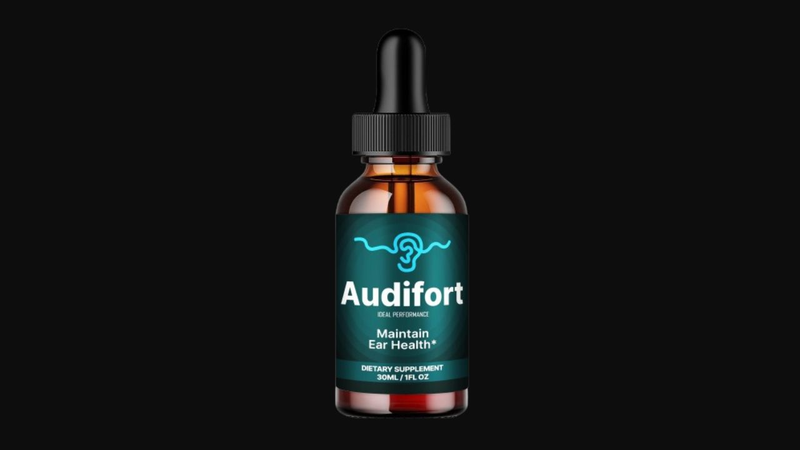

I analyzed Audifort's 20+ ingredient liquid formula against 14 scientific references on hearing health and tinnitus. Here's the honest truth about what this formula does and who it works best for.
▶ Watch our full Audifort video review before buying
Audifort addresses hearing health through a multi-mechanism approach — improving blood flow to the ears, providing antioxidant protection for auditory cells, supporting the neural pathways involved in sound processing, and reducing the anxiety that amplifies tinnitus perception. The liquid drops format delivers faster absorption than capsules. The 14 scientific citations show genuine research rigor. For adults with tinnitus or age-related hearing decline, Audifort provides meaningful multi-pathway support.
Audifort is a hearing support supplement in liquid drop form — created by Andrew Ross after years of research into natural hearing health solutions. It contains over 20 carefully selected natural ingredients targeting the multiple biological pathways involved in hearing decline and tinnitus.
The formula cites 14 scientific references from sources including NIDCD (National Institute on Deafness), Georgetown University Medical Center, and published research on neuroprotective phytochemicals and B vitamins for brain health. This academic grounding gives Audifort more credibility than most hearing supplements on the market.

Tinnitus and hearing decline have multiple biological drivers. Georgetown University Medical Center research found tinnitus is the result of the brain trying — but failing — to repair itself after auditory damage. NIDCD research shows that rebooting neural pathways can help stop the ring of tinnitus. Both findings point to a key truth: hearing health is as much about brain and neural health as it is about ear health.
Blood flow to the ear's delicate structures (cochlear hair cells) is also critical. Reduced circulation — from aging, inflammation, or oxidative damage — starves auditory cells of oxygen and nutrients, accelerating hearing decline. Audifort addresses both the neural and vascular mechanisms simultaneously with its 20+ ingredient blend.
OPC antioxidants specifically protect the delicate blood vessels supplying the cochlea and auditory nerve from oxidative damage — one of the primary drivers of age-related hearing decline. Research on neuroprotective phytochemicals confirms grape seed's protective role in neural tissue.
EGCG from green tea improves microcirculation throughout the body, including the small capillaries feeding the inner ear. Better blood flow means better oxygen and nutrient delivery to cochlear hair cells — directly supporting hearing function maintenance.
GABA (gamma-aminobutyric acid) is the brain's primary inhibitory neurotransmitter. Research shows elevated neural excitability is a key mechanism in tinnitus — the brain becomes hypersensitive and amplifies the phantom sounds. GABA helps regulate this excitability, reducing the neural "noise" that tinnitus sufferers experience as constant ringing.
Traditional Ayurvedic herb with documented hearing support properties. Also helps maintain stable blood glucose — relevant because blood sugar instability directly affects cochlear blood flow and auditory nerve function.
Capsaicin from red pepper supports a healthy inflammatory response in auditory tissue. Chronic low-grade inflammation in the cochlea contributes to progressive hearing decline — Capsicum Annuum provides targeted anti-inflammatory support.
Supports overall energy levels and mental clarity. Tinnitus is significantly worsened by fatigue and cognitive load — Maca Root's adaptogenic energy support helps reduce the subjective severity of tinnitus symptoms by improving the mental bandwidth to cope with them.
"I treasure my peace and quiet more than anything. Knowing that by taking Audifort I'm feeding my hearing these essential nutrients helps me sleep better at night. Definitely give this one a try."
"It's only been three weeks since I started taking Audifort but I love how easy it is to take and how well it works to support my mental sharpness. I put a couple of drops in my morning coffee and just go on my way. I've already shared my supply with friends who are coming back for more."
"The ringing in my ears has been my constant companion for four years. After six weeks on Audifort it hasn't disappeared but it's noticeably quieter — I can sleep through the night now without it keeping me awake. That alone has changed my quality of life."
90-Day Guarantee · 20+ Ingredients · Liquid Drops · 14 Scientific References
→ Visit Official Audifort Website90-Day Guarantee · 20+ Ingredients · Liquid Drops · Free Shipping on 3+
→ Get Audifort at the Official PriceAffiliate Disclosure: This review contains affiliate links. We may earn a commission at no additional cost to you. See our Affiliate Disclosure. Not evaluated by the FDA. Not intended to diagnose, treat, cure, or prevent any disease.